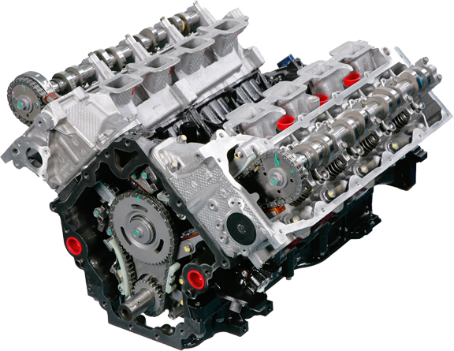

Fonctionement:

- 1.Admission d'un mélange air/essence préalablement dosé par le systéme d'injection à un rapport stoechiométrique. La soupape d'admission s'ouvre tandis que le piston descend dans le cylindre et crée une dépréssion aspirant ainsi le mélange air/essence. (admission)
- 2.Une fois le piston au point mort bas (PMB) la soupape d'admission se ferme, le piston remonte dans le cylindre afin de comprimé le mélange air/essence dans la chambre de combustion. (compression)
- 3.Une fois le piston arrivé au point mort haut (PMH), la bougie produit une étincelle qui enflame le mélange en créant une poussée qui renvoi le piston vers le bas. (combustion/détente)
- 4.La soupape d'échappement s'ouvre, et le piston remonte jusqu'au point mort haut pour chasser les gaz d'échappement vers le collecteur d'échappement.(échappement)